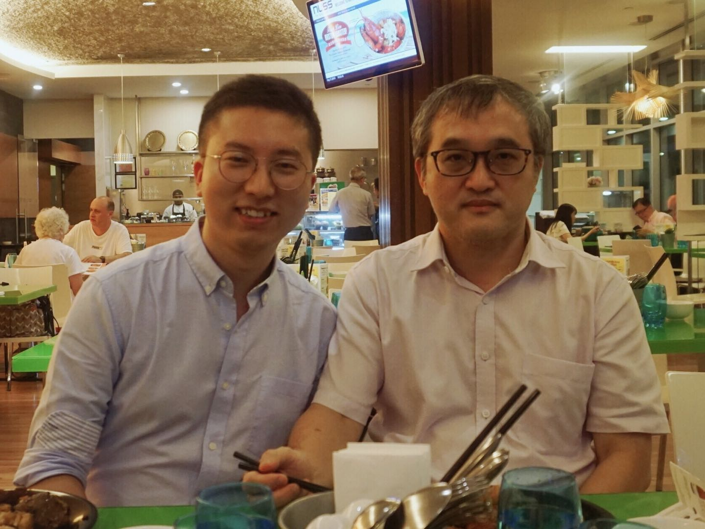

Ph.D. in Management
National University of Singapore
Research Affiliate
Research Fellow
Institute of OR and Analytics (NUS)
Social
Email
Scholar
ORCID
GitHub
Contact:
Institute of OR and Analytics
Innovation 4.0, 3 Research Link
Singapore 117602
In May 2019, I received my Ph.D. in Management from NUS Business School, with the great pleasure of being advised by Professor Chung-Piaw Teo. After graduation from NUS, I took a gap year for national service, and came back to academia in January 2021. I am on the 2021-2022 academic job market.
I am broadly interested in exploring the interactions between data analytics and operations research, with applications stretching from classical operation management (e.g., supply chain management) to smart city operations (e.g., smart locker system) and sustainable development (e.g., cash transfer program). From the methodological perspective, my primary research involves online and data-driven optimization. My Ph.D. dissertation, which is about supply chain visibility with real-time resource allocation, was a finalist in INFORMS George B. Dantzig Dissertation Award Competition 2019.
I am also keen on developing interpretable and implementable models based on distributionally robust optimization, empirical analysis, and machine learning techniques etc. I have been working with Singapore government and leading enterprises on the Locker Alliance project, following a new smart nation initiative in Singapore. I also worked with P&G, SingPost, Yamato, Didi Chuxing, and Singapore Pools, to help them make better decisions in real-time.